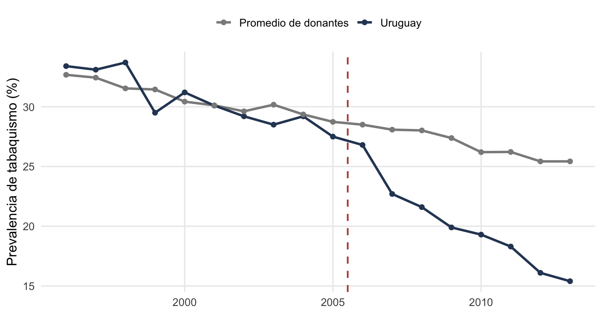
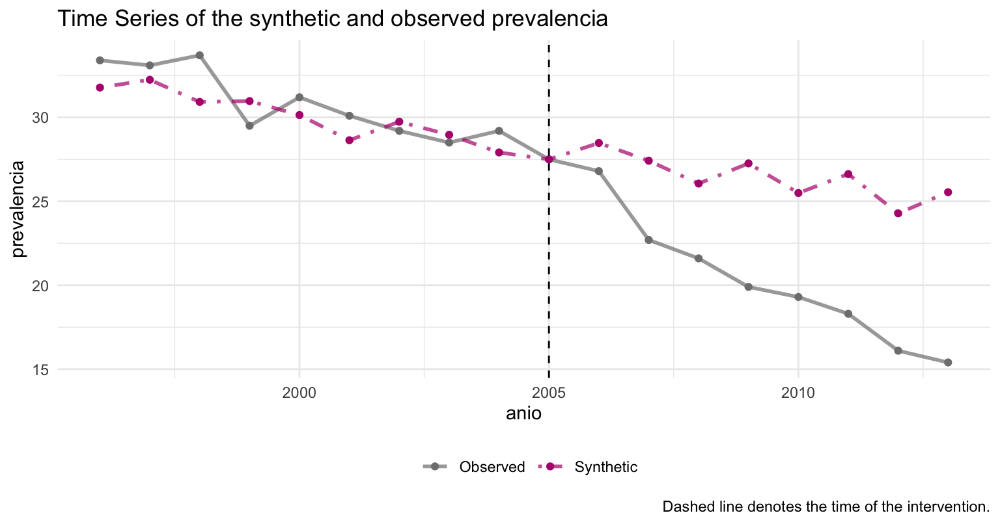
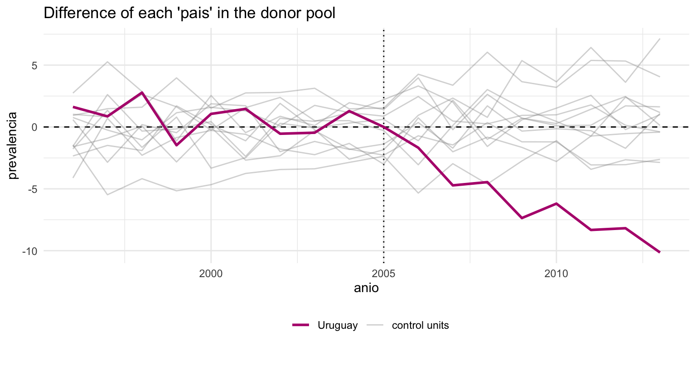

library(tidyverse)
library(estimatr)
library(tidysynth)
datos <- read_csv("datos/tabaco_panel.csv", show_col_types = FALSE)Tarea 3: Diferencias en diferencias y control sintético — Respuestas
Práctica · el control del tabaco en Uruguay
Esta es la clave de respuestas de la Tarea 3. Cada bloque trae la solución y, debajo, un comentario con los números. Salen con la semilla de los datos; si corriste la tarea, deberías obtener lo mismo.
1 Diferencias en diferencias
1.1 Pregunta 1: el 2×2 a mano
medias <- datos |>
group_by(tratado, post) |>
summarise(prev = round(mean(prevalencia), 2), .groups = "drop")
medias# A tibble: 4 × 3
tratado post prev
<dbl> <dbl> <dbl>
1 0 0 30.6
2 0 1 26.9
3 1 0 30.5
4 1 1 20.0# la doble resta
(20.01 - 30.54) - (26.91 - 30.65)[1] -6.79Respuesta: los cuatro promedios son: donantes antes 30,7 y después 26,9; Uruguay antes 30,5 y después 20,0. Uruguay baja unos 10,5 puntos; los donantes bajan 3,7 (el tabaquismo venía cayendo en toda la región). La doble resta da ≈ −6,8 puntos porcentuales. La primera resta (Uruguay después − antes) saca todo lo que es fijo de Uruguay; la segunda (donantes después − antes) mide la tendencia común que hay que descontar. Lo que queda es la caída extra de Uruguay: el efecto atribuible a la política.
1.2 Pregunta 2: el mismo número como regresión
did <- lm_robust(prevalencia ~ tratado * post, data = datos)
round(coef(summary(did))[, 1:4], 3) Estimate Std. Error t value Pr(>|t|)
(Intercept) 30.652 0.480 63.869 0.000
tratado -0.112 0.844 -0.132 0.895
post -3.745 0.704 -5.322 0.000
tratado:post -6.783 1.640 -4.136 0.000Respuesta: cada coeficiente es una celda del 2×2. El intercepto (30,7) es el donante típico antes de la política; tratado (−0,1) es la brecha que ya existía entre Uruguay y los donantes, casi nula; post (−3,7) es la caída común a todos desde 2006; y la interacción tratado:post (−6,8) es lo que le pasó sólo a Uruguay y sólo después. Coincide exactamente con la doble resta de la pregunta 1: el DiD es esa interacción.
1.3 Pregunta 3: ¿son creíbles las tendencias paralelas?
uy <- datos |>
filter(tratado == 1) |>
transmute(anio, prev = prevalencia, grupo = "Uruguay")
donantes <- datos |>
filter(tratado == 0) |>
group_by(anio) |>
summarise(prev = mean(prevalencia), .groups = "drop") |>
mutate(grupo = "Promedio de donantes")
serie <- bind_rows(uy, donantes)
ggplot(serie, aes(anio, prev, color = grupo)) +
geom_line(linewidth = 1.1) +
geom_point(size = 1.8) +
geom_vline(xintercept = 2005.5, linetype = "dashed",
color = rojo, linewidth = 0.8) +
scale_color_manual(values = c("Uruguay" = azul,
"Promedio de donantes" = "grey55")) +
labs(x = NULL, y = "Prevalencia de tabaquismo (%)", color = NULL) +
tema_taller +
theme(legend.position = "top")
Respuesta: antes de 2006 las dos líneas van casi pegadas: la brecha promedio entre Uruguay y los donantes en el período pre-política es de apenas −0,1 puntos, moviéndose dentro de una banda estrecha. Ese paralelismo previo hace más creíble el supuesto de tendencias paralelas, la base del DiD. Después de 2006 las series se separan: Uruguay cae mucho más rápido. Cuidado, igual: pre-tendencias parejas hacen el supuesto plausible, no lo prueban; podría romperse por anticipación o por un shock que coincida con la política.
2 Control sintético
2.1 Pregunta 4: construir el Uruguay sintético
sc <- datos |>
synthetic_control(outcome = prevalencia, unit = pais, time = anio,
i_unit = "Uruguay", i_time = 2005,
generate_placebos = TRUE) |>
generate_predictor(time_window = 1996:2005,
pib = mean(pib_pc), urb = mean(urbanizacion),
gs = mean(gasto_salud), precio = mean(precio_cigarrillos)) |>
generate_predictor(time_window = 1996:2005, prev_pre = mean(prevalencia)) |>
generate_weights() |>
generate_control()Respuesta: el pipe define el problema (Uruguay como tratado, 2005 como último año sin política), usa las covariables y la prevalencia pre-2006 como predictores, y deja que el método elija los pesos. El objeto sc guarda las series, los pesos y los placebos para los pasos siguientes.
2.2 Pregunta 5: ver el ajuste y leer los pesos
sc |> plot_trends()
sc |> grab_unit_weights() |> arrange(desc(weight)) |> head(5)# A tibble: 5 × 2
unit weight
<chr> <dbl>
1 Panamá 0.524
2 México 0.247
3 Perú 0.205
4 Costa Rica 0.0192
5 Argentina 0.00492Respuesta: antes de 2006 el sintético calca bien a Uruguay, y después el Uruguay real cae por debajo de su clon: esa brecha es el efecto estimado. El Uruguay sintético se arma sobre todo con Panamá (≈ 0,52), México (≈ 0,25) y Perú (≈ 0,21), con aportes chicos de Costa Rica y Argentina. Que el peso se concentre en unos pocos países latinoamericanos con niveles de tabaquismo parecidos es razonable, y es una ventaja del método: los pesos son transparentes, cualquiera puede leerlos y discutir si tienen sentido.
2.3 Pregunta 6: ¿es real el efecto? Inferencia por placebos
sc |> plot_placebos(prune = FALSE)
sc |> grab_significance() |>
filter(type == "Treated") |>
select(unit_name, pre_mspe, post_mspe, mspe_ratio, rank, fishers_exact_pvalue)# A tibble: 1 × 6
unit_name pre_mspe post_mspe mspe_ratio rank fishers_exact_pvalue
<chr> <dbl> <dbl> <dbl> <int> <dbl>
1 Uruguay 1.87 47.1 25.2 1 0.0833Respuesta: en el gráfico de placebos, la brecha de Uruguay es la más marcada de todas: ninguno de los 11 donantes, tratado en falso, produce una separación parecida. La razón MSPE (error post sobre error pre) pone a Uruguay en el rank 1 de 12, con un valor \(p\) estilo Fisher de ≈ 0,083 (que es 1/12). Uruguay es el caso más extremo del panel, justo lo que esperaríamos si la política tuvo un efecto real.
3 Interpretar
3.1 Pregunta 7: los dos métodos y la advertencia
sc |>
grab_synthetic_control() |>
filter(time_unit == 2013)# A tibble: 1 × 3
time_unit real_y synth_y
<dbl> <dbl> <dbl>
1 2013 15.4 25.5Respuesta: los dos métodos coinciden en la historia: el tabaquismo en Uruguay cayó más de lo que habría caído sin la política. El DiD da un efecto promedio de ≈ −6,8 puntos sobre todo el período post; el control sintético muestra una brecha que crece con los años y llega a ≈ −10 puntos hacia 2013 (Uruguay en ≈ 15% frente a un sintético en ≈ 25%). El DiD promedia todo el período y el sintético mira el efecto acumulándose, así que el sintético, más grande al final, es coherente con el DiD.
Sobre la inferencia, hay una sola unidad tratada. El valor \(p\) del control sintético no puede bajar de 1/12 ≈ 0,083, porque con 12 países la brecha de Uruguay, aun siendo la más extrema, sólo puede ocupar el primer lugar entre doce: el tamaño del pool pone el piso. Y el valor \(p\) de la regresión DiD hay que leerlo con cuidado: descansa en la variación año a año de una única serie tratada, no en muchos “Uruguays”, así que suele salir demasiado optimista. A quien me muestre ese \(p\) como garantía le diría que, con un solo caso tratado, la inferencia honesta viene de los placebos, no del error estándar de la regresión.